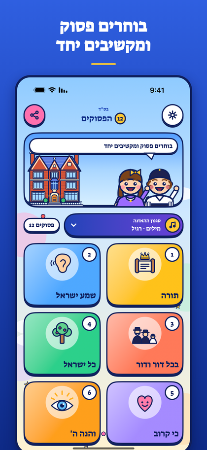
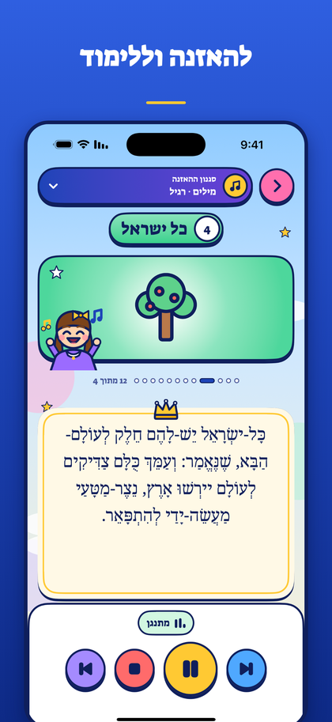
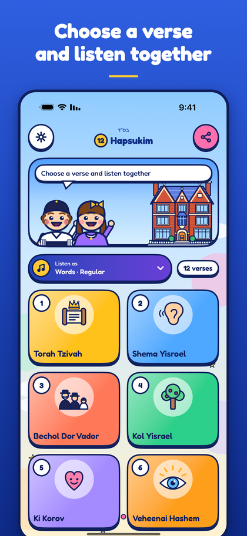
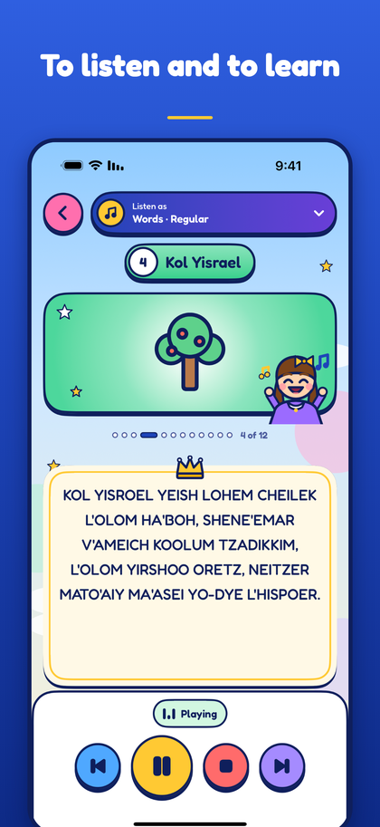
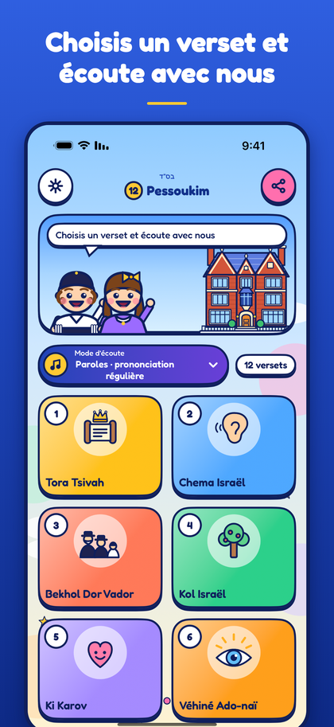
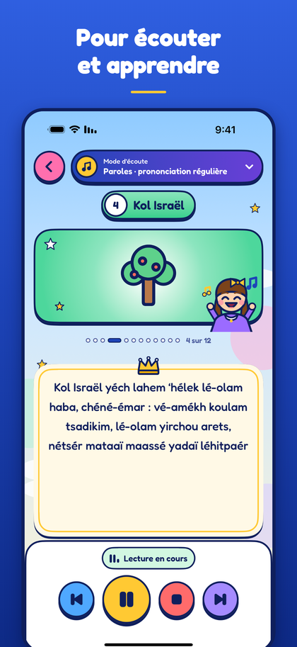

12 הפסוקים
להאזנה, ללימוד ולשירה של שנים עשר הפסוקים.
אפליקציה צבעונית לילדים. נוגעים בפסוק והוא מתנגן. לכל פסוק יש תמונה משלו, הנוסח המלא וילד וילדה ששרים יחד. שלוש דרכים להאזנה: רגיל, אשכנזי או שיר. עברית, אנגלית וצרפתית. עובד בלי אינטרנט, בלי פרסומות ובלי הרשמה.


תמיכה
שאלות, בעיות או רעיונות? כתבו לנו ונחזור אליכם בהקדם:
שאלות נפוצות
ההקלטה לא מתנגנת.
בדקו שהמכשיר לא במצב שקט ושהעוצמה מוגברת, ואז סגרו ופתחו את האפליקציה. אם זה לא עוזר, כתבו לנו עם דגם המכשיר וגרסת המערכת.
איך מחליפים שפה?
האפליקציה פועלת לפי שפת המכשיר (עברית, אנגלית או צרפתית). באייפון ובאייפד, ובאנדרואיד 13 ומעלה, אפשר לקבוע שפה אחרת לאפליקציה בלבד בהגדרות המכשיר, תחת האפליקציה.
איך מוסיפים את "יחי"?
פותחים את ההגדרות (הגלגל במסך הראשי) ומפעילים "לכלול יחי". הוא יופיע כפסוק השלושה עשר.
האם זה מתנגן כשהמסך נעול?
כן. ההשמעה נמשכת גם כשעוברים לאפליקציה אחרת או נועלים את המסך, ואפשר לשלוט בה ממסך הנעילה או באוזניות.
12 Hapsukim
Listen, learn and sing the twelve verses.
A colorful app for children. Tap a verse and it plays. Each verse has its own picture, the full text and a friendly boy and girl who sing along. Three ways to listen: Regular, Ashkenazi or Song. Hebrew, English and French. Works offline, with no ads and no sign-up.


Support
Questions, problems or ideas? Write to us and we will reply as soon as we can:
Common questions
The audio does not play.
Check that the device is not on silent and the volume is up, then close and open the app. If it still fails, write to us with your device model and system version.
How do I change the language?
The app follows your device language (Hebrew, English or French). On iPhone and iPad, and on Android 13 and later, you can set a different language for this app only in the device Settings, under the app.
How do I add Yechi?
Open Settings (the gear on the main screen) and turn on "Include Yechi". It appears as the thirteenth verse.
Does it play when the screen is locked?
Yes. Playback continues when you switch apps or lock the screen, and you can control it from the lock screen or with headphones.
12 Pessoukim
Écouter, apprendre et chanter les douze versets.
Une application colorée pour les enfants. Un toucher sur un verset et il se lance. Chaque verset a son illustration, son texte complet, et un garçon et une fille qui chantent avec l'audio. Trois façons d'écouter : prononciation régulière, ashkénaze ou chant. Hébreu, français et anglais. Fonctionne sans connexion, sans publicité et sans inscription.


Assistance
Une question, un problème ou une idée ? Écrivez-nous, nous répondrons dès que possible :
Questions fréquentes
L'audio ne se lance pas.
Vérifiez que l'appareil n'est pas en mode silencieux et que le volume est levé, puis fermez et rouvrez l'application. Si le problème continue, écrivez-nous en indiquant le modèle de votre appareil et la version du système.
Comment changer la langue ?
L'application suit la langue de l'appareil (hébreu, français ou anglais). Sur iPhone et iPad, et sur Android 13 et plus, vous pouvez choisir une autre langue pour cette application seulement dans les Réglages de l'appareil, à la rubrique de l'application.
Comment ajouter Yéhi ?
Ouvrez les Réglages (la roue dentée sur l'écran principal) et activez « Inclure Yéhi ». Il apparaît comme treizième verset.
La lecture continue-t-elle écran verrouillé ?
Oui. La lecture continue quand vous changez d'application ou verrouillez l'écran, et vous pouvez la commander depuis l'écran verrouillé ou avec un casque.